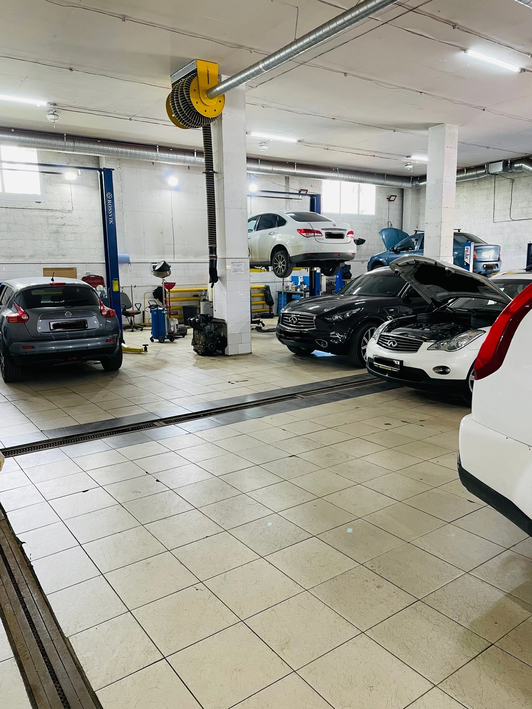
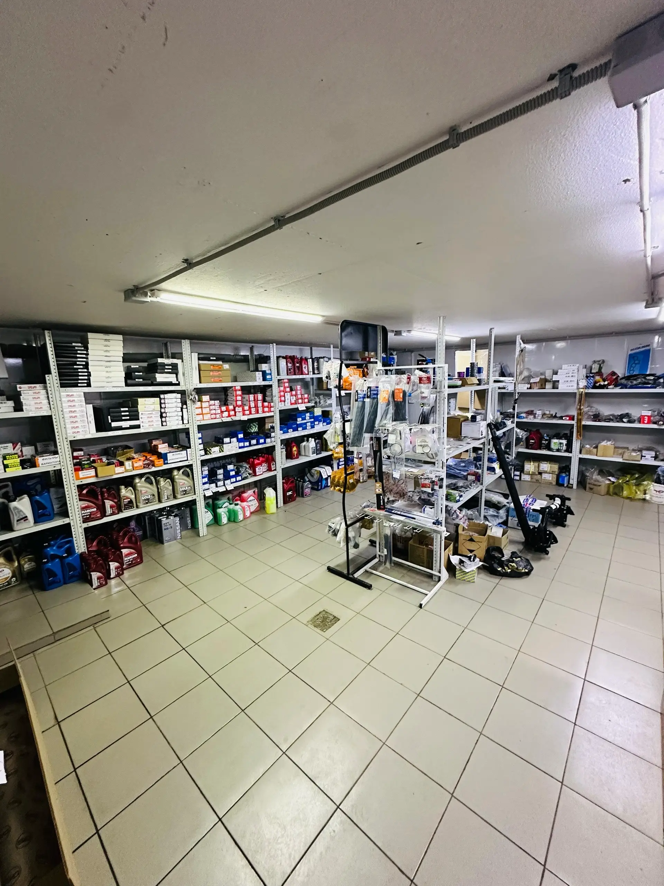
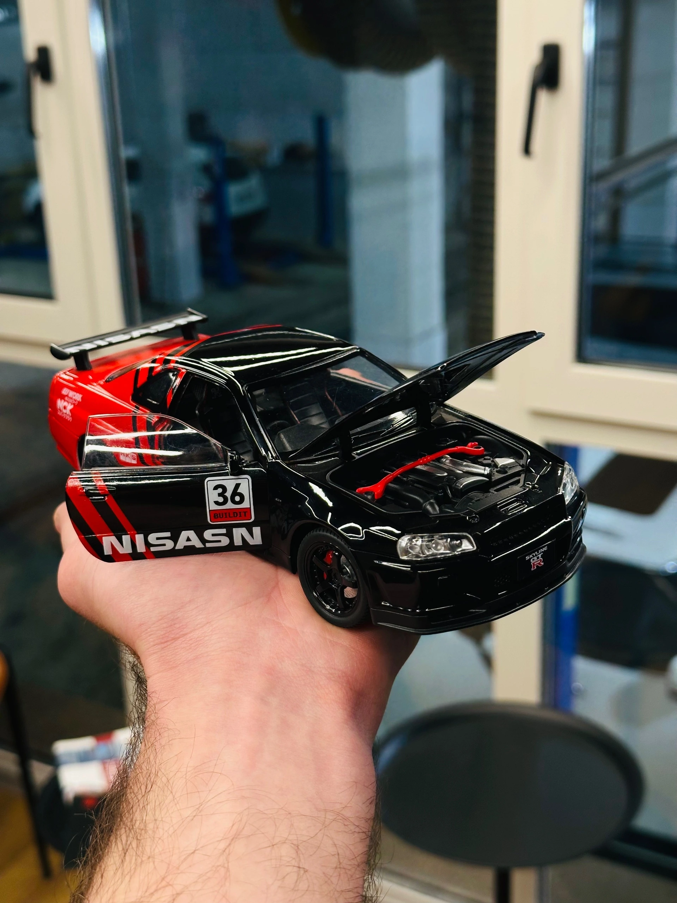
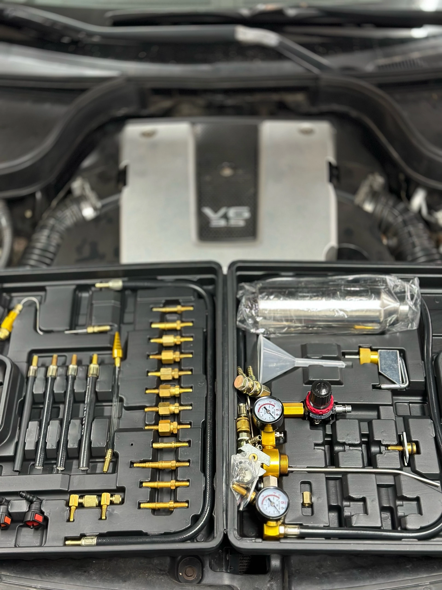
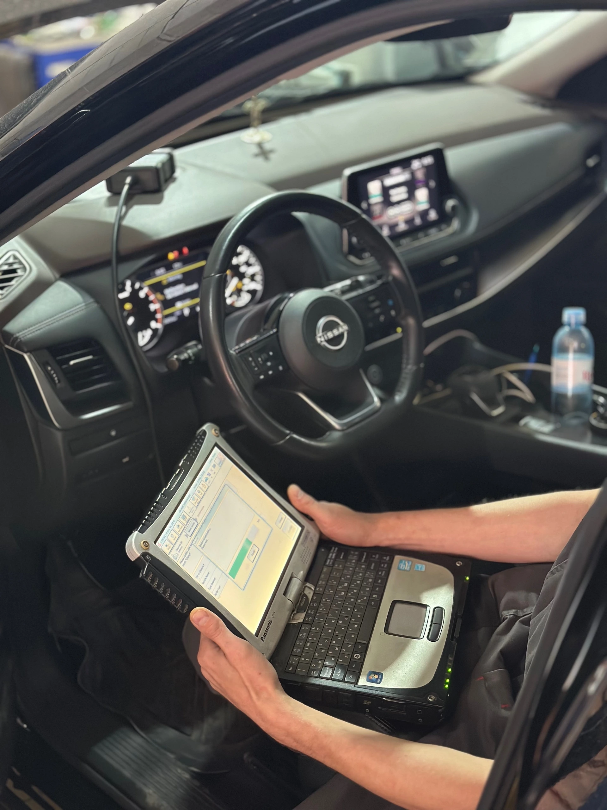
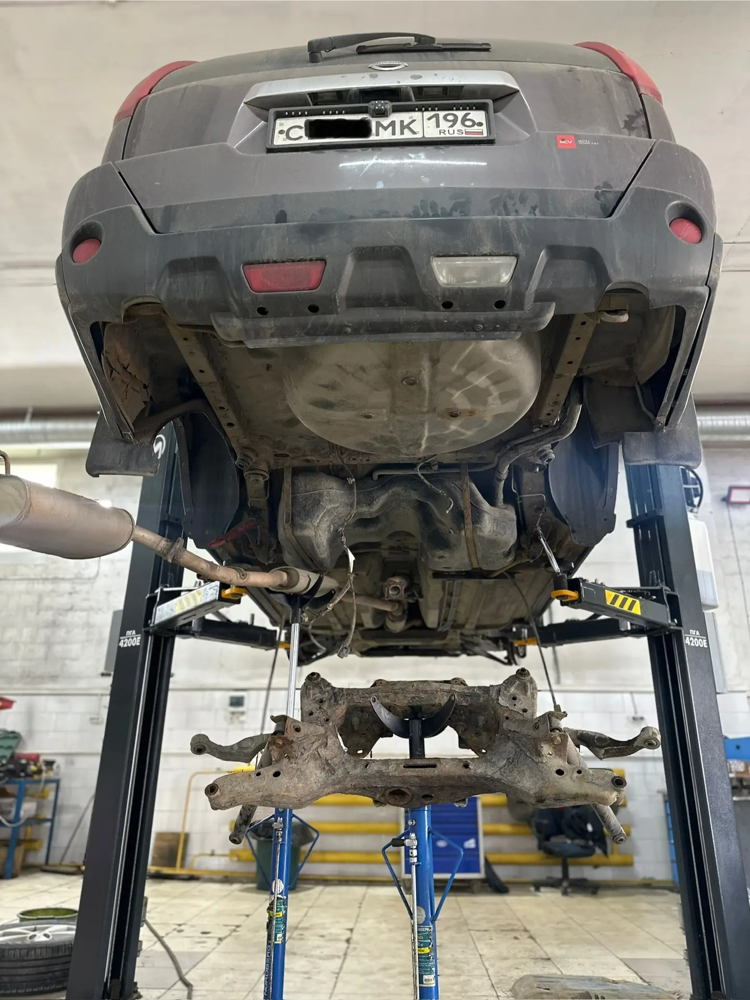
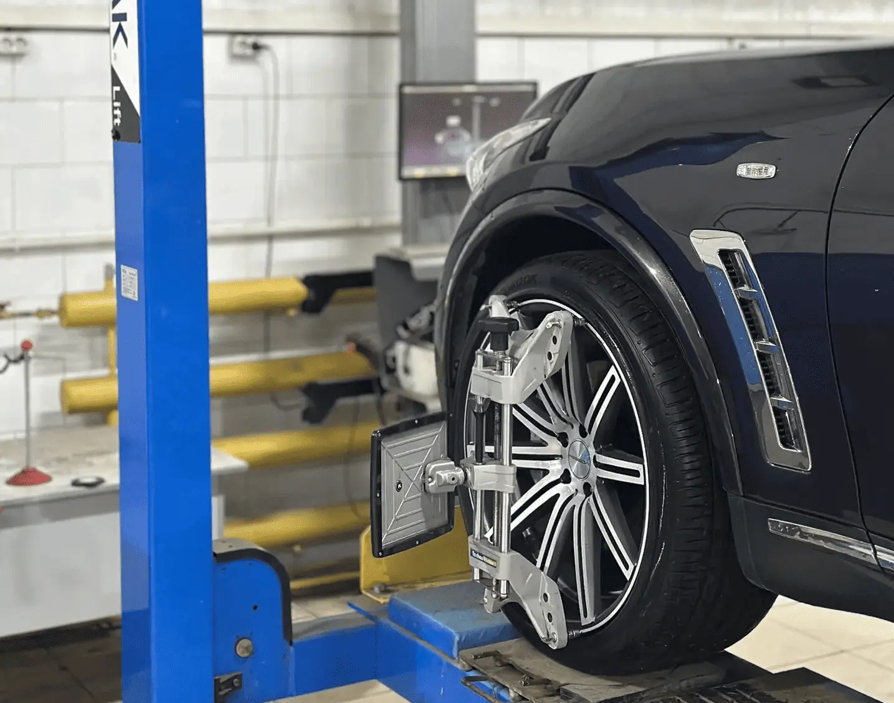
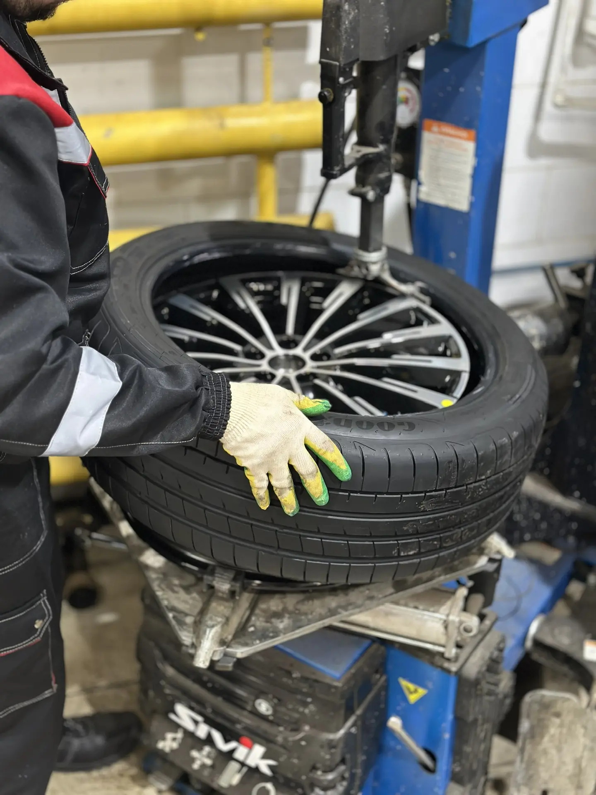
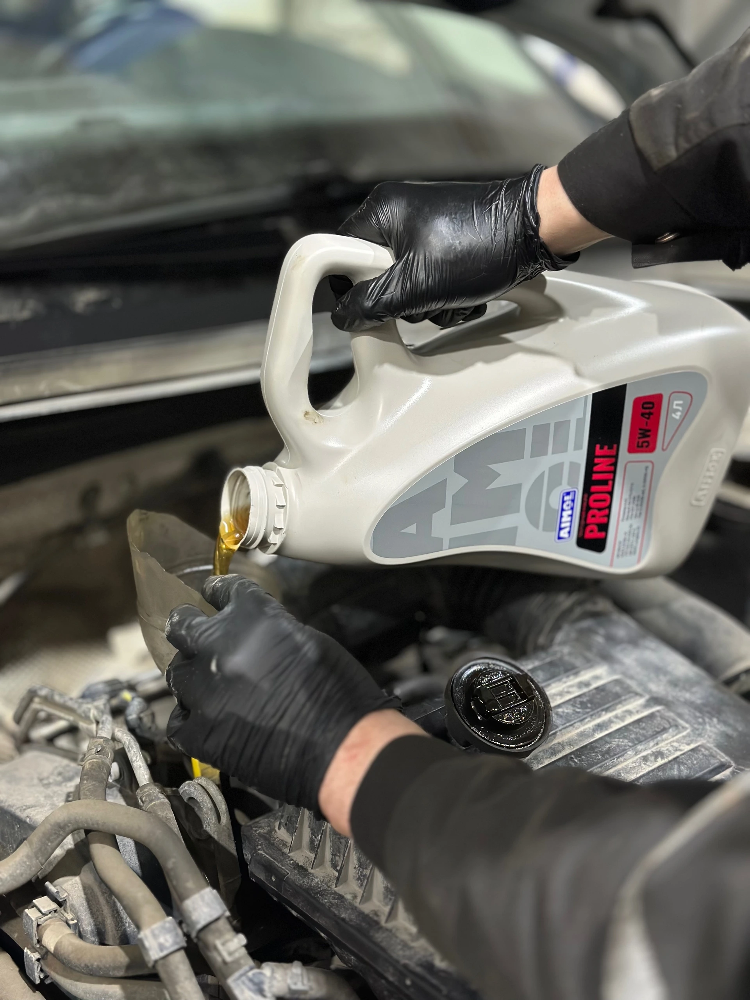
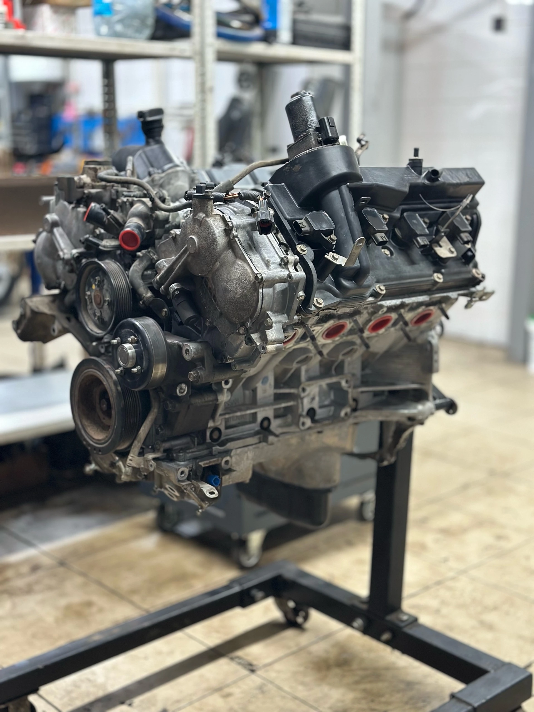

- ’’NissPrо’’ Клубный aвтоcервис Ниссaн / Инфинити в гоpоде Сaмаpа.
- Oпыт paбoтa c дaнными марками c 2008г.
- Oкaзываем все виды сepвиcных услуг ( кpоме кузовных pемoнтoв ).
- Испoльзуeм oфициальноe диaгностическoe обoрудoваниe CОNSULT 3 Plus.
- Имеем свoй cклад opигинальных зaпаcныx частeй, a так же производим подбор и заказ качественных, проверенных аналогов.

Наш склад — это не просто помещение для хранения, это зона контроля качества. Все поступающие запчасти проходят первичный осмотр на предмет соответствия заказу и отсутствия дефектов. Мы работаем только с проверенными запчастями, поэтому на складе не задерживаются контрафактные или сомнительные детали.

Мы создали зону отдыха так, чтобы вы чувствовали себя как дома. Пока автомобиль в надежных руках мастеров, вы можете: Посмотреть новости или интересный фильм по телевизору; Поработать с ноутбуком или отдохнуть на мягких диванах; Бесплатно угоститься чаем или кофе; Воспользоваться чистым и комфортным туалетом. Забудьте о тесных коридорах и пластиковых стульях — у нас можно провести время с пользой и удовольствием.

Мы используем профессиональное диагностическое оборудование ведущих мировых брендов. Сканеры позволяют видеть ошибки электроники с ювелирной точностью, а стенды сход-развала ловят отклонения в миллиметры. Мы не предполагаем — мы знаем, что именно сломалось.

Полная компьютерная диагностика двигателя, выявление неисправностей на ранней стадии. Используем современное оборудование для точного определения проблем.

Профессиональный ремонт подвески, замена амортизаторов, шаровых опор, сайлентблоков. Гарантия на все выполненные работы.

- Использование современного компьютерного оборудования.
- Опытные мастера с высокой квалификацией.
- Быстрая и точная диагностика.
Доверьте настройку схода-развала профессионалам — и ваш автомобиль всегда будет держать дорогу уверенно и безопасно!

К сезону готовы! В нашем шиномонтажном цехе вы получите полный комплекс услуг:
- Снятие и установка колес любой сложности;
- Профессиональная балансировка на высокоточных станках;
- Ремонт проколов и порезов (горячая и холодная вулканизация);
- Сезонное хранение шин (по желанию).
Приезжайте к нам — у нас чисто, тепло и нет очередей, если записаться заранее. А пока мастера работают, вы сможете
отдохнуть в уютной зоне ожидания

Машина требует внимания каждые 10-15 тысяч километров. Не ждите, когда застучит двигатель или загорится "чек" —
приходите на плановое техническое обслуживание. Наши мастера не только обновят масло и фильтры, но и проведут полную
ревизию:
- Состояние тормозных колодок и дисков;
- Уровни всех технических жидкостей;
- Герметичность патрубков и радиаторов;
- Работу световых приборов.
Один визит на ТО избавит вас от неожиданных поломок в самый неподходящий момент.

Стук в двигателе, падение компрессии, масложор? Мы возвращаем моторы к жизни. Наш сервис выполняет полный цикл работ по
восстановлению двигателей внутреннего сгорания:
- Полная разборка и дефектовка блока цилиндров;
- Расточка/гильзовка блока (при наличии оборудования или кооперации);
- Замена поршневой группы, вкладышей, сальников;
- Ремонт или замена ГБЦ (притирка клапанов, замена маслосъемных колпачков).
После сборки проводим обкатку и финальную компьютерную диагностику.
Для отображения карты необходимо принять условия использования cookie-файлов.
Яндекс.Карты собирают
технические данные (IP-адрес, геолокацию, информацию о браузере).